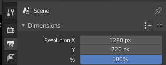
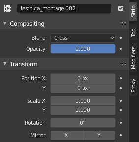

Бывает так, что в начале проекта видеоинженер забывает выставить правильное значение разрешения итогового видео в настройках Output Properties - Scene - Dimension. А когда приходит время рендерить, хватается за голову, потому что оказывается, все время работал в неправильном разрешении. А отрендерить видео с нужным масштабом Blender не дает, потому что он понимает только целочисленные значения процентов, а чтобы получить нужное разрешение видео с точностью до пикселя, зачастую нужно указывать дробные значения.
Что делать в таком случае?
Что бы разобраться, далее будет приведен пример с сырым видео, которое имело разрешение 1280x720, а разрешение сцены было выставлено в 1920x1080. Конечное видео нужно получить в разрешении исходника, то есть в 1280x720.
Примечание: исправление возможно в случае, если видео во время монтажа было нарезано на небольшое количество стрипов. Если стрипов много, то потребуется много времени на выполнение однотипных действий для каждого стрипа. Возможно, работу можно автоматизировать, но непонятно как.
Итак, для исправления ситуации нужно установить разрешение итогового видео в нужные значения. Делатся это в Output Properties - Scene - Dimension в поле Resolution:

После этого действия будет видно, что существующее видео "не влезает" в размер итогового разрешения, потому что оно смотировано с выставленным разрешением 1920x1080. Это произошло потому, что в момент добавления сырого видео на Time Line, Blender автоматически увеличил размер загружаемого видео с 1280x720 до 1920x1080. Сделал он это потому, что в вышеуказанных настройках стояло разрешение 1920x1080, и именно такое он и применил. Другими словами, Blender увеличил загружаемый стрип в 1,5 раза по горизонтали и вертикали.
То есть, теперь нужно изменить размер стрипов (если видеомонтаж был простым, и небыло игр с размерами видео). Для изменения размера на базовый, нужно выделить видео-стрип, и в его свойствах отредактировать свойство Transform - Scale. Будет видно, что там стоит множитель 1.5, и его надо установить в значение 1.0.

То же самое можно сделать для картинок, если они имели разрешение сырого видео и использовались как заставки.
Вот таким образом можно исправить ситуацию. Если же монтаж был сложным, то придется отрендерить видео в заданном в проекте разрешении в формате какого-нибудь монтажного кодека, а потом переконвертировать его в нужный размер, например, через ffmpeg.